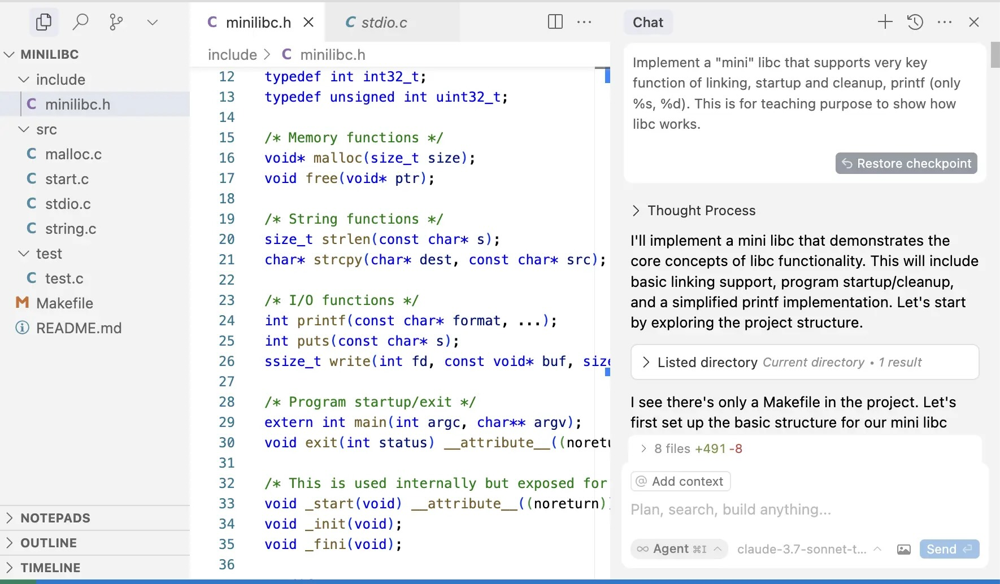

NAME := $(shell basename $(PWD))
export MODULE := M2
all: $(NAME)
include ../oslab.mk
include ../.shadow/oslab.mk
void _start() {
__asm__("mov $60, %eax\n" // syscall: exit
"xor %edi, %edi\n" // status: 0
"syscall");
}
int a = 7, b = 5, result;
__asm__ ("leal (%1,%1,4), %0" // result = a*5
: "=r" (result) // output operand
: "r" (a)); // input operand
printf("%d * %d = %d\n", a, b, result);

再次回到学习 C 语言时 “最简单” 的例子；但当我们有了操作系统的知识以后，我们就可以深入调试其中的每一个细节。从汇编指令到系统调用到，我们可以看到程序和处理器、操作系统的所有交互。
pc = stack[-1].PC
stack[-1].PC.next()
inst[pc].execute()
match inst[pc]:
case "call setjmp":
buf.depth = len(stack)
buf.pc = stack[-1].PC
stack[-1].retval = 0
case "call longjmp":
stack = stack[:buf.depth]
stack[-1].PC = buf.pc
stack[-1].retval = (x if x != 0 else 1)
case _:
inst[pc].execute()
int vfprintf(FILE *, const char *, va_list);
$ gcc nonexist.c
gcc: error: nonexist.c: No such file or directory
int main(argc, char *argv[], char *envp[]);
在系统调用和语言机制的基础上，libc 为我们提供了开发跨平台应用程序的 “第一级抽象”。在此基础上构建起了万千世界：C++ (扩充了 C 标准库)、Java、浏览器世界……今天，C 语言在应用开发方面有很多缺陷，但仍然为 “第一级抽象” 提供了一个有趣的范本：C is not a low-level language, 以及 C isn’t a programming language any more。
在 AI 的帮助下调试 musl libc 中你感兴趣的函数。